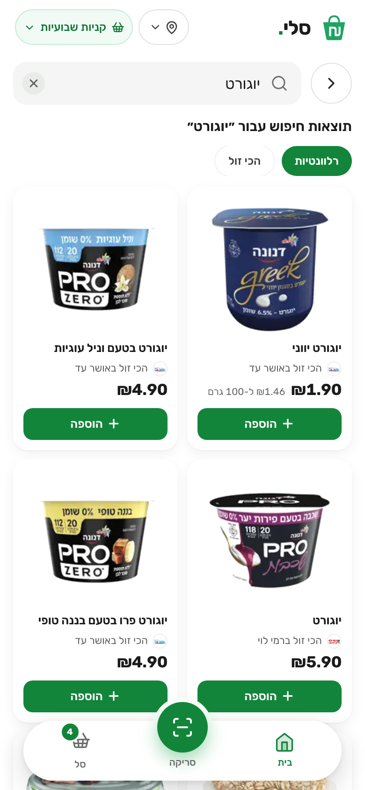
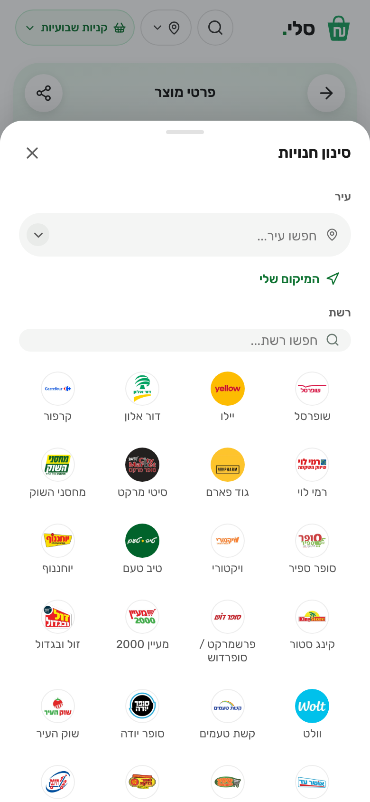
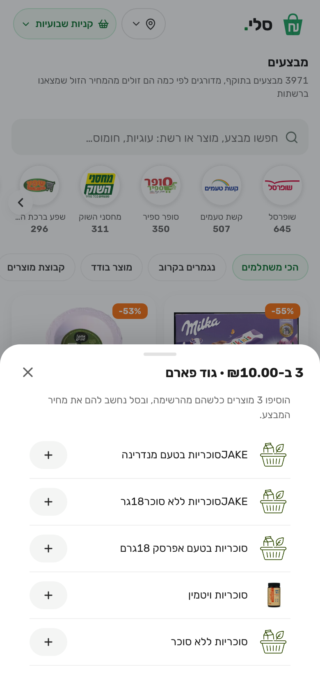

What happens when someone taps, when something goes wrong, and what the system does by itself.

Search resultsPhoto cards, sort, scroll
Filter storesCity, chain, near me
Group dealChoose which productAddresses on sali.one: / Home, /product/<barcode>, /basket, /promotions Deals, /scan, /about. An unknown address shows a “page not found” page with links back to search and Deals.
| The tap | What happens | If it goes wrong |
|---|---|---|
| Search | Results appear and keep loading as the user scrolls; sort by relevance or cheapest. | “No products found”, or “Could not load, try again” |
| + add to basket | The item flies to the basket icon and joins the active basket (the first add of a visit asks which, if there are several). | Adding the same item raises its quantity |
| Filter or Near me | The list narrows and the choice is remembered; “near me” shows stores within 15 km with distances. | None match or no permission: all stores shown, with a note |
| Deals page | A search box finds deals by product or chain; the list keeps loading as the user scrolls, deals with a picture first. | No match: a message and a button to clear the search |
| Deal card | Opens the product; the button adds exactly the units the deal needs; a group deal opens a list to choose from. | A finished deal is simply not listed |
| Compare basket | Totals at each store with deals applied and shown per line. | Empty basket message; “N items missing”; a note when we lack fresh deal data for a branch |
| Scan | The camera reads the code and the product opens. | Clear message with no permission or camera; unknown code offers typing |
| Back from a product | Same results or same card, same scroll position. | If cleared from memory, the list loads again |
Failures never leave a blank screen: an unexpected error shows “Something went wrong” and a way home, a late answer never overwrites a newer one, pages fade in without flashing, and blocked browser storage only means the basket is not kept.
At 06:00 and 18:00 Israel time; each run takes 2 to 3 hours.